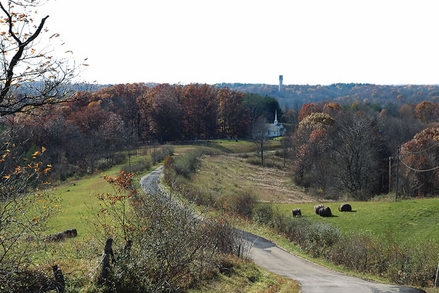

Located in southeast Ohio, Athens looks nothing like the rest of the state - with its rolling, forested hills, Athens is actually part of Appalachia. “Even though it’s only an hour and a half from Columbus, it’s a whole other world,” says Dave Gutknecht, manager of the Athens farmers market and editor of Cooperative Grocer magazine. To help residents enjoy the calm beauty of the area, there are several state parks nearby and a paved bike trail from Athens to Nelsonville.
Farmland is available in Athens, but it’s not the black topsoil and flat fields of typical Midwestern farms. Instead, farms in the area tend to be small, and growers have to work harder to make the clay soil productive. But many have taken up the challenge, and, thanks to the mild climate, have turned the area into a bit of horticultural heaven. The Athens farmers market is open year-round and everything sold is local. Athens also has a community kitchen that growers can use to make value-added food products.
Athens is home to Ohio University, which gives it all the benefits of a college town: arts, culture, eclectic restaurants and bookstores, speakers and sporting events. But unlike some better-known college towns, Athens remains fairly remote and inexpensive.
Do you live in Athens? Have you visited? Please post your comments below.
Population: 21,824
County: Athens
Climate: cold winters and warm summers; generally without extreme temperatures
Cost of living index: 92
Median home price: $144,900
Alternative energy: net metering, some loan and grant programs
Don’t miss: Dairy Barn Arts Center
|
 BARON/THE IMAGE FINDERS There's a calm beauty in the rolling, forested hills of Athens. |
|
|